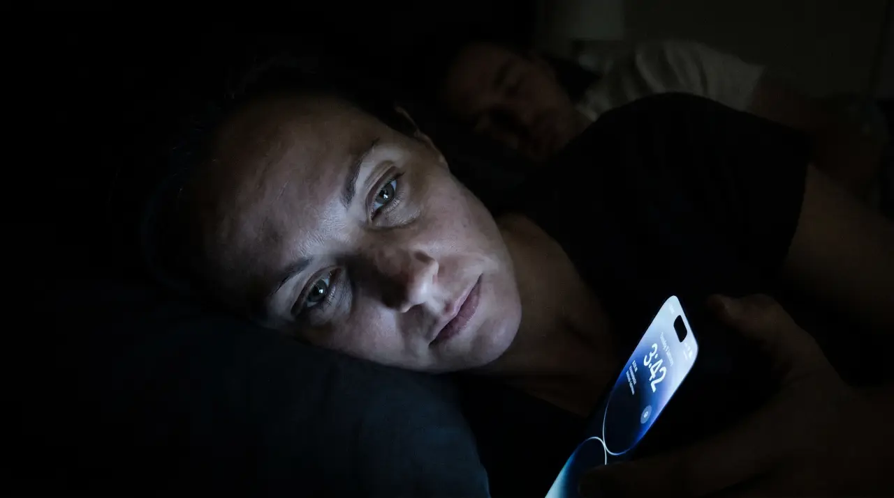
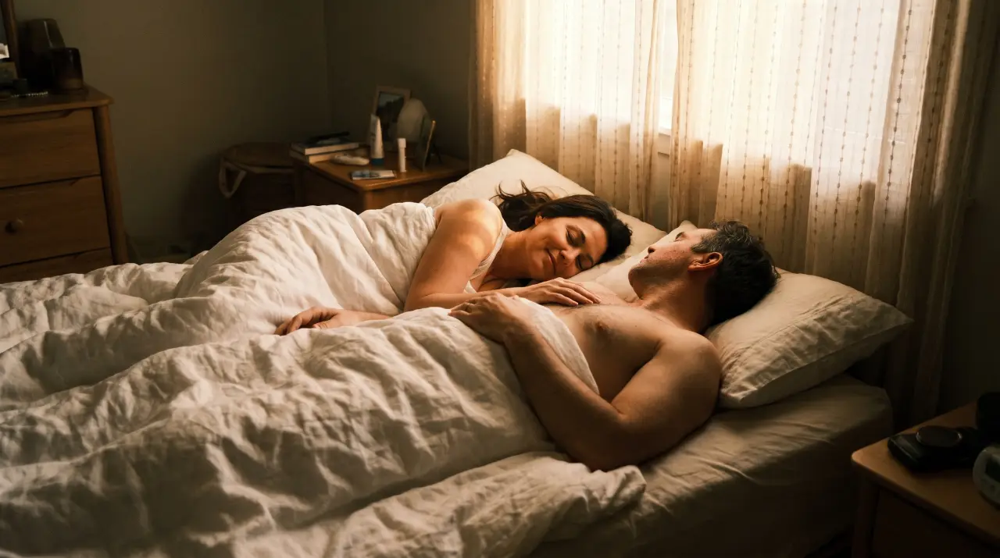
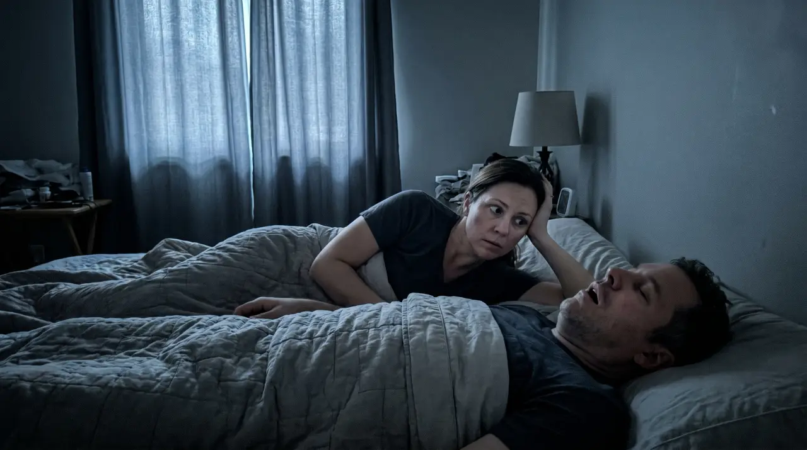

I don't usually talk about this.
Not with my sister. Not with my best friend Karen who I've known since college. Not with the women I do yoga with on Tuesday mornings who I've told almost everything else to over the years.
Because how do you say it without sounding like you're complaining about your husband, who is by every measure that matters a genuinely good man.
But I was running on four hours of broken sleep a night for years, and I was slowly losing myself in it. My patience, my focus, that version of me I actually liked.
So I stopped waiting for the problem to fix itself. And I found something. I've been sitting on it for a few months now and I think I need to write it down, because if you're dealing with what I was dealing with, you need to know this exists.
It Started Small. The Way These Things Always Do.
In the beginning it was almost funny.
I'd elbow him, he'd roll over, problem solved. We laughed about it in the morning. I bought the foam earplugs from CVS, the bright orange ones that come in a little plastic jar, and for a while that was enough.
Then it wasn't.
The earplugs started hurting after an hour, that pressurized feeling deep in your ears at 2am, so I'd pull them out and that's when I'd hear it. And once you hear it you can't unhear it.
He'd be completely unconscious. Peaceful. Unaware. And I'd be lying next to him, wide awake, watching the ceiling.
I Tried Everything. I Mean Everything.
White noise apps. Ocean sounds. Brown noise, which I didn't even know existed until I was googling things at 2am that no sane person should be googling at 2am.
A wedge pillow that was supposed to change his sleeping position. A nose strip phase that lasted exactly one week. A $280 mouthguard he ordered very seriously after one of our conversations. Wore it twice, said it made his jaw ache, and it sat on his nightstand so long it became part of the furniture.
Every time something new appeared I'd have this small flutter of hope. Told myself not to get excited. Got excited anyway. And then lay awake at 2am listening to the same sound, another attempt quietly added to the pile of things that didn't work.
After a while I stopped letting myself hope, because being disappointed again felt worse than just accepting it.
"After a while I stopped letting myself hope, because being disappointed again felt worse than just accepting it."
Here's The Part I've Never Said Out Loud.
About two years in, I started going to bed earlier than him on purpose.
Not because I was tired at 9:30pm. I wasn't. I did it so I could get 90 minutes of real sleep before he came to bed and the whole thing started again. I was rationing my own sleep like it was something scarce that had to be carefully protected and managed.
I never told him that. It felt too cruel to say out loud.
And the exhaustion, it changes you in ways that are hard to explain to someone who hasn't lived it. It's not the dramatic kind of tired where you're falling asleep at your desk. It's quieter than that. Forgetting words mid-sentence. Crying in a parking lot over something completely insignificant and knowing somewhere underneath it that you're not actually crying about that. Becoming a slightly worse version of yourself and not having the energy to do anything about it.
I went to my doctor. She gave me a pamphlet about sleep hygiene that I threw away before I got to my car. Nobody thought to ask about him.

I Tried To Talk To Him About It. More Than Once.
The first time he genuinely didn't believe it was that bad, so I showed him a recording I'd made on my phone. He was horrified for about a week and then slowly forgot about it.
The second time I cried, not on purpose, I was just so tired and I couldn't explain how tired I was without my voice breaking. He felt terrible. I felt terrible for making him feel terrible. We both agreed something had to change and then nothing changed.
The third time I didn't bring it up the way I planned to. I just said very quietly that I couldn't keep going like this. He looked at me for a long moment and said he didn't know what to do.
Neither did I. That was the whole problem.
What I Found, And Why I Almost Didn't Try It.
I wasn't looking for anything specific the night I found SnoreStop. I was just on my phone, tired, reading about snoring because apparently that's what my life had become at midnight. And I came across it: a natural throat spray, not a device, not a machine, not something he had to mold or adjust or remember to charge.
Just a spray. Two seconds before bed.
My first thought was that it sounded too simple. My second thought was that everything I'd tried had been complicated and none of it had worked, so I ordered it. It arrived two days later and I put it on his nightstand without making a big deal of it.
He noticed it the next morning, picked it up, read the back.
"You want me to try this?"
I said: "I just want us both to sleep. So yes."
He used it that night the way you take a vitamin. Something small and unremarkable that you do and then forget about. I woke up at some point in the early hours and realized it was quiet. Just quiet. I lay there waiting for it to start back up and it didn't.
By the third night I was waking up in the morning doing that confused thing where you check your phone because you genuinely can't believe you slept through. 6:52am. Last time I'd looked at my phone was 11:08pm.
Nearly eight hours. I'm not going to pretend I didn't tear up a little, alone in bed at 6:52 in the morning, genuinely emotional about sleeping. But that's what four years does to you.
Why It Actually Works, And Why I Wish I'd Known Sooner.
This isn't some gadget someone invented in their garage last year. It isn't a mouthguard you have to boil or a machine that costs $1,500 and sounds like a vacuum cleaner running next to your head all night.
SnoreStop has been in American pharmacies since 1995. Thirty years. While every other snoring solution was coming and going, the strips, the devices, the $2,000 custom dental guards that take months to get and aren't covered by insurance, this one has just been quietly sitting on shelves, working, for three decades.
The reason it works is actually simple once you understand it. Snoring isn't a nose problem. It's a throat problem. While you sleep, the soft tissue in the back of the throat relaxes and collapses slightly, and when air passes through that narrowed space the tissue vibrates, and that vibration is the sound. That's all snoring is. SnoreStop coats that tissue with a fine natural spray that reduces the vibration. No mask. No device. No prescription. No doctor visit. Just two seconds before bed.

I spent four years not sleeping while a $30 natural spray that's been trusted since before I was married sat three miles from my house. That's the part I still can't get over. Over 250,000 people have already found this, and their reviews are not the fake five-star flood you see on new Amazon products. They're thirty years of real word-of-mouth from people who tried everything else first.
People like me.
Three Months Later.
I stopped going to bed at 9:30pm to ration sleep before he came upstairs. I stopped keeping a mental log of what made things worse on any given night. I stopped lying next to him feeling something I didn't want to feel toward someone I love.
I stay up and watch shows with him again. Stupid things, things that don't matter. And then we go to bed at the same time and I fall asleep and I wake up feeling like myself.
Our mornings are different now. He makes coffee, asks how I slept, and I actually have a real answer. That sounds like nothing. It's everything.
I didn't realize how much of us had quietly eroded under four years of me running on empty until I felt it start coming back. The patience, the warmth, the version of me that actually showed up for this marriage the way I always wanted to.
All of that was just sleep. We were one good night's sleep away from being okay and I didn't know it.

The Part That Made Me Finally Pull The Trigger.
I'll be honest. Even at $30, even after reading everything about it, I hesitated. Because I'd been disappointed enough times that spending another dollar on another thing felt like more than I could take emotionally.
But here's what got me. SnoreStop comes with a full 30-day money back guarantee, and honestly that's the best part of this whole thing, better than the price, better than the thirty years in pharmacies, better than any review I read.
Either It Works, Or It's Completely Free.
You try it for 30 full nights and if it doesn't do what it says, you get every single dollar back. No conversation. No justifying yourself. No runaround from a company that wasn't confident in what they were selling.
There is no version of trying SnoreStop where you lose. The guarantee makes that mathematically impossible. If they're willing to back it with a full refund for every single customer who isn't happy, they must know something. And 250,000 people and thirty years in pharmacies later, that confidence seems more than earned.
Why I'm Writing This.
I'm not writing this because anyone asked me to.
I'm writing this because I spent four years quietly suffering through something that had a solution I didn't know about, and that solution was sitting in a pharmacy three miles from my house the entire time.
If you're where I was, the earplugs, the white noise, the conversations that went nowhere, the slow exhaustion that became your normal, there is a way out and it's simpler than you think. And if it doesn't work you pay absolutely nothing, because the guarantee covers you completely.
You have everything to gain and literally nothing to lose.
I got my sleep back. I got myself back. I didn't realize how much of myself had gone with it until I felt it return, and I want that for you too.
Don't wait four years like I did.
Full 30-day money back guarantee — either it works or it's free
Ships in 2 days · No prescription needed · Natural ingredients